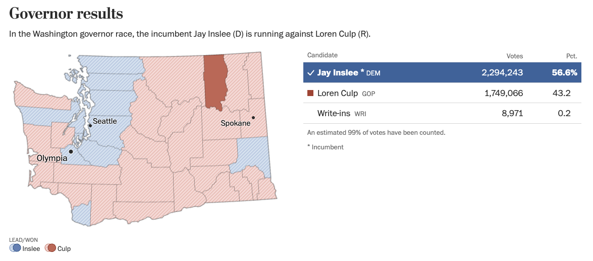
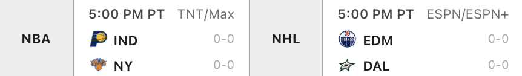

Compact Results Table
Designing and developing a minimal, flexible election results table for The Washinton Post's homepage
My Role
- Position: Senior Software Engineer
- Responsibilities: UI Design, Front-End Development, Product Management
- Collaborators: Designers, Journalists, Editors
Summary
I designed and built a compact results table to bring live election results directly to The Washington Post’s homepage. The challenge was to deliver essential information in an extremely limited space without sacrificing clarity or usability.
Problem
Standard election tables were too large and information-dense for use of multiple on the homepage at the same time. We needed a version that prioritized space efficiency while still conveying the most critical election data, whether for primaries or general elections.
For reference, our most commonly used election results tables looked like this.
Goals
- Fit cleanly into any tight homepage layout
- Remove non-essential data to focus on core results
- Design for flexibility between primary and general elections
- Ensure readability and mobile responsiveness
- Extremely lightweight to not weigh down the homepage when using multiple
Process
I explored radically simplified layouts, removing any element that wasn’t essential. I drew inspiration from sports scoreboards, especially ESPN game listings, where the contest title is left-aligned and the outcome right-aligned, reversing our usual pattern.
I shared early ideas with journalists and designers, gathered feedback, and iterated until we landed on a version that balanced clarity, space, and functionality. The component was then tested rigorously for various types of elections. The process of testing homepage components involves collaborating witht he homepage team, scheduling bug bashes, and making additional code changes in a different repo.
Design Decisions
- Used a left-right layout inspired by sports scoreboards
- Eliminated vote counts and highlight more important data like percentages and winner indicators
- Made the table flexible for different election types (primary vs general)
- Optimized spacing, alignment, and wrapping behavior for mobile
- Accounted for edge cases by enabling customizations (e.g. only using the last name when names are very long)
- Create petite party icons and used AP style state names

Challenges
The main challenge was fitting meaningful results into a tight space without confusing users. The reversed layout also required careful user testing and internal review. I made sure the component handled a wide range of race types and edge cases across elections.
It was especially challenging to account for all edge cases, including varying names and name lengths. Thorough testing before each election is always crucial to ensure clarity. The component can be customized to show only last names if a candidate name is too long. However, in one election, two candidates had the same first initial and last name, so we had to be thoughtful in how we displayed them within such a small component.
Impact
- Launched successfully across both primaries and general elections
- Consistently featured on The Post homepage during major elections
- Praised internally for its clarity, adaptability, and visual simplicity
Reflection
This project reminded me that thoughtful design often means subtraction. By focusing on what readers truly need and testing multiple layouts, I was able to create something small in size but big in impact.
Project information
- Category UI Design, Web Development
- Client The Washington Post
- Tools Figma, TypeScript, React, Stitches
- Project date April-May, 2022
- Project URL https://www.washingtonpost.com/elections/midterms-2022/
- Visit Website